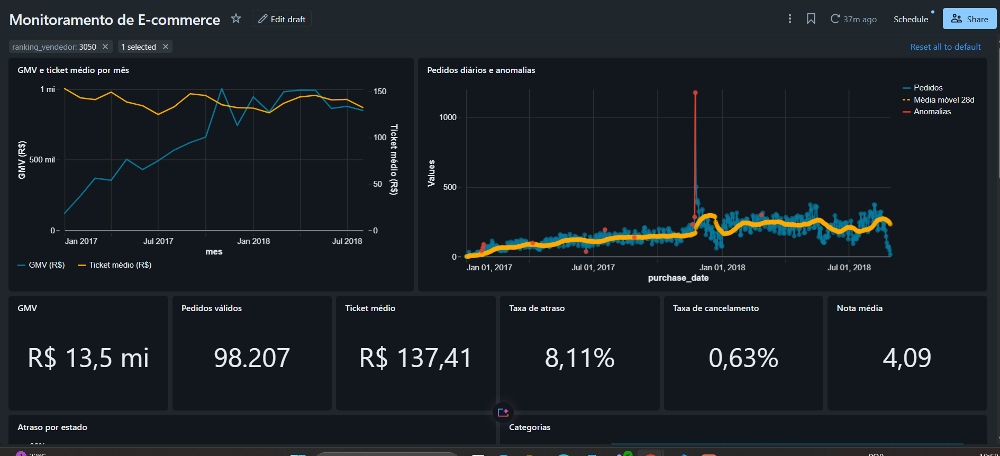

Plataforma de monitoramento de e-commerce
Pipeline de dados de ponta a ponta no Databricks

- Problema
- Times de operação precisam saber todo dia se vendas, entregas e avaliações estão normais, e se os dados são confiáveis.
- Solução
- Arquitetura Medallion (bronze, silver, gold) sobre ~100 mil pedidos reais do Olist, 15 regras de qualidade com histórico, detecção de anomalias por z-score com alertas e dashboard, orquestrados por um Workflow com portão de qualidade.
R$ 13,5 miGMV analisado
98.207pedidos válidos
8,11%taxa de atraso
15regras de qualidade
A Black Friday de 2017 foi detectada automaticamente como pico de volume, e a análise de concentração mostrou que os 100 maiores vendedores respondem por 45% do GMV.
- Python
- SQL
- Delta Lake
- Databricks Workflows
- AI/BI Dashboards